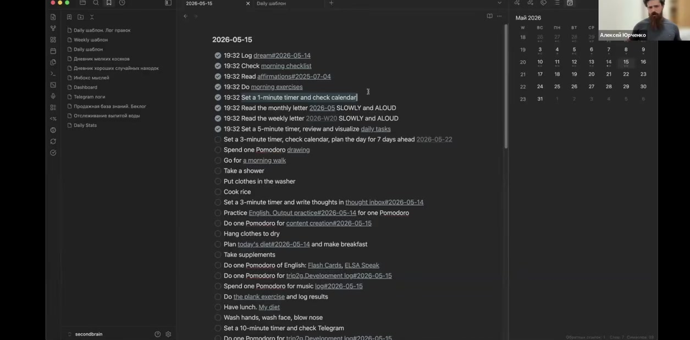
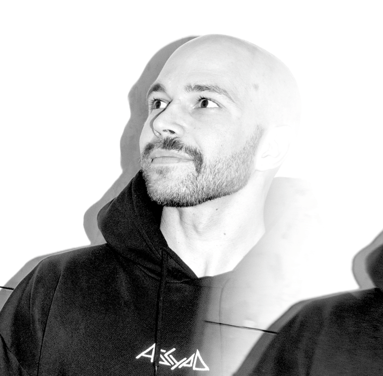

контекст-инжиниринг
Данные становятся полезными, когда у них появляется структура и смысл.
Среда, где люди выходят за рамки промптов и строят свои личные и командные системы мышления. AI как экзоскелет мышления, а не коллекция инструментов.
Эта страница держит подход AIM как систему: контекст-инжиниринг, создание вместо потребления, mindset, среда и практика на реальных задачах.
Данные становятся полезными, когда у них появляется структура и смысл.
Личный контекст превращает AI из инструмента в напарника по мышлению.
Формат строится вокруг создания собственных систем, а не просмотра записей.
Инструменты меняются, а способ думать и проектировать рабочие процессы остаётся.
Предприниматели, продакты, дизайнеры, инженеры и медиа-авторы дают друг другу новые кейсы.
Навигация не должна делать вид, что AIM это одна страница лаборатории. Здесь сразу видны активные и постоянные входы.
Квартальная лаборатория на стыке человеческого и машинного.
→ подробнееСпринт про систему агентов для внимания, задач и знаний.
→ подробнееАгентоцентричные организации и инфраструктура всей компании.
→ подробнееПрактическое AI-сообщество для фаундеров и специалистов.
→ подать заявкуНикаких пустых отзывов и старых проектов без ссылок: только source-backed quote и локальные case assets из V3.
«Качайте стратегическую компетенцию — AI Mindset»
Екатерина Грачева, HR-коммуникации, ex-Avito, МТС, Альфа-Банк, Сбер. Источник: отзыв на aimindset.org / Telegram.
Операционная система для команды и рабочих сессий.

Пайплайн встреч и задач на базе AI-процессов.

Визуальная система практики и наблюдений.

Рабочая карта перехода и самонаблюдения.
Короткий preview для главной: люди появляются как рабочая сеть вокруг лабораторий, Space и командных треков.




Главная не раскрывает все детали, но показывает, что у каждого направления есть свой маршрут.
Каждый продукт можно пройти командой 3+ человека с задачами компании.
→ подробнееПрактическое AI-сообщество: live demo, разбор кейсов, нетворкинг, гайды и практики.
→ подать заявкуОтдельное направление для non-profit проектов и команд.
→ открытьНиз главной должен помогать выбрать маршрут, а не становиться архивной свалкой.